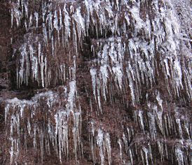

USKONTO
OPPIMATERIAALIA NETISSÄ VUODESTA 1999 LÄHTIEN
PSYKOLOGIAN PIKALINKIT
PSYKAN VIDEOABIKURSSIT:
PSYKOLOGIAN MAAILMA -VIDEOKERTAUSKURSSI ABEILLE (vlogi) - uudet OPSit
PS7 ABI KERTAUSKURSSI (opetustilanne) - VANHA OPS
(OPS 2016 ja 2021):
PS1 Toimiva ja oppiva ihminen
PS2 Kehittyvä ihminen
PS3 Tietoa käsittelevä ihminen
PS4 Tunteet ja mielenterveys
PS5 Yksilöllinen ja yhteisöllinen ihminen
Uskonto:
UE1
UE2
UE3
UE4
UE5
UE6
Filosofia:
FI1
FI2
FI3
FI4
FI5

Kuvassa on jääpuikkoja, joita myöten vesi valuu alaspäin suojasään aikaan. Kuva on Hitonhaudalta, joka sijaitsee Äänekosken ja Laukaan pitäjien rajamailla ja on käymisen arvoinen paikka.
LINKIT ULKOMAAILMAAN
USKONNOT
Suomen ev.-lut.kirkon kotisivu
Herättäjä-yhdistyksen kotisivu
ELY:n kotisivu
SLEY:n kotisivu
Suomen Rauhanyhdistysten Keskusyhdistys ry:n kotisivu
Lähetysyhdistys Rauhan Sanan sivusto
Lestadiolaisen Uusheräyksen sivusto
Lestadiolaisuus sivusto
Länsi-Suomen Rukoilevaisten Yhdistys ry:n sivusto
Suomen Raamattuopisto
Suomen Evankelisluterilainen Kansanlähetys
Kansan Raamattuseura
OPKO:n kotisivu
Kylväjän kotisivu
Sanansaattajien kotisivu
Helsingin Raamattukoulun kotisivu
Suomen ortodoksinen kirkko
Valamon luostari
Lintulan luostari
Ekumeeninen patriarkaatti
Pääkaupunkiseudun kristillisiä tilaisuuksia esittelevä sivusto TILAISUUDET.INFO
Suomen helluntaikirkko
Suomen Helluntainuoret
Helluntaiherätys
Aikamedia
Iso Kirja
Suomen Vapaakirkko
Katolinen Kirkko Suomessa
Vatikaanin sivusto (engl. ym.)
Suomen Adventtikirkon kotisivu
Seventh-Day Adventist Church
Pelastusarmeija
Salvation Army (kansainv. sivusto) engl.
The Anglican Church in Finland
The Church of England
The Anglican Domain
Suomen Baptistikirkko
Baptist World Alliance
Suomen Metodistikirkko
Kansainvälinen metodismisivusto (engl.)
Campus Crusade for Christ (engl.)
Campus Crusade for Christ (engl.) opiskelijasivusto
Suomen Gideonit ry.
The Gideons International (engl.)
Israelin ystävät
Kristillinen ashramtoiminta
Ystävyyden majatalo
The Navigators (engl.)
Helsingin NMKY avioliittotyö
YMCA (engl.)
YMCA Int. (engl.)
Operaatio Mobilisaatio
OM international (engl.)
Patmos lähetyssäätiö
Raamattujen lahjalähetys (Airut-lehti)
Stefanus-lähetys
Suomen Karmel-yhdistys
Suomen World Vision
World Vision International (engl.)
Wycliffe Raamatunkääntäjät ry.
Wycliffe Raamatunkääntäjät (engl.)
Jumalan seurakunnan kotisivu
Linkkiseurakunnan kotisivu
Missionuorten kotisivu
Siiloan seurakunnan kotisivu
STELKin kotisivu
Ulf Ekmanin (uskon srk) kotisivu
Uppsalan Livets Ordin kotisivu
Kenneth Haginin perustaman seurakunnan (Rhema, uskon srk) kotisivu
Elävät Kivet seurakunnan kotisivu
Suur-Helsingin seurakunnan kotisivu
Elävän Sana -seurakunnan (ESY) kotisivu
Tampereen kristillisen yhteisön kotisivu
Elämän Sana -seurakunnan kotisivu
Vaasan City-seurakunnan kotisivu
Uusi Elämä -lehden kotisivu
Helsinki Vineyard-yhteisön kotisivu
Kansainvälinen Vineyard-yhteisön kotisivu
Suomen Teologisen Instituutin kotisivu
Tuomasyhteisön kotisivu
Hengen Uudistus Kirkossamme -kotisivu
Rukouspalvelu ry:n (Seppo Juntunen) kotisivu
Rukousystävät ry:n (Pirkko Jalovaara) kotisivu
Paavalin synodin kotisivu
Suomen Luther-säätiö
Suomen vapaa evankelisluterilainen seurakuntaliitto -kotisivu
Suomen Tunnustuksellisen Luterilaisen Kirkon kotisivu
Nokia Missio Churchin kotisivu
Missiomaailma ry:n kotisivu
Israel-työ ry:n kotisivu
Kristuksen seurakunnan -yhteystietosivu
Lasarus-veljien kotisivu
Raamattu Kansalle ry:n kotisivu
Raamattu Puhuu kotisivu
Suomen Uusapostolinen kirkko
Concordia ry:n kotisivu
Via Dolorosa ry:n kotisivu
Henotes seurakunnan kotisivu
Evankelisluterilainen tunnustuskirkko
Jehovan todistajat (viralliset sivut)
JT-tuki (huom! kriittinen sivusto)
Veljesseura (huom! kriittinen sivusto)
Myöhempien Aikojen Pyhien Jeesuksen Kristuksen Kirkko
Mormonien kansainv. sivusto (engl.)
Latter Day Saints kansainv. sivusto (engl.)
Mormonismi.net (Huom! Kriittinen sivusto)
Mormonien apologia-sivusto (ei virallisen kirkon, mutta mormonien ylläpitämä sivusto, engl.)
Branhamilaisuuden kotisivusto (engl.)
William Branham kotisivu (engl.)
Kristillinen Tiede kotisivusto (suom.)
Christian Science kotisivusto (engl.)
Suomen Kristiyhteisön kotisivu
The Worldwide Church of God -kotisivusto (engl.)
The Restored Church of God -sivusto (engl.)
The Unification Church eli moonilaisuus (engl.)
Sun Myung Moon (engl.)
Islamopas
Tampereen islamilainen seurakunta
Suomen islamilainen yhdyskunta
Perusopetuksen muiden uskontojen opetussuunnitelmat - sivuilla 24-27 islam
Suomen Buddhalainen Unioni (yhdistää suomalaista buddhalaista)
Bodhidharma ry.
Buddhalainen Dharmakeskus
Finnish-Thai Buddhist Association ry
Helsinki Zen-Center
Nirodha Ry.
Suomalais-Tiibetiläinen Kulttuuriseura
Shin-buddhalaisuus
Buddhanet.net (engl.)
Suomen Joogaliitto
Krishnaliikkeen ISKCON Suomessa -kotisivu
Krishnaliikkeen lehti Back to Godhead
TM-liike
Ananda Marga (engl.)
OSHO-liikkeen sivusto (engl.)
Brahma Kumaris Henkinen Maailmanyliopisto kotisivu
Sri Chinmoy Center ry
Sri Sathya Sai Baba -kotisivu (engl.)
Suomen Amma-keskus Ry:n kotisivu
Hinduism Today -lehden kotisivu (engl.)
About hinduism (engl.)
Helsingin juutalainen seurakunta
Turun juutalainen seurakunta
Uskonnot Suomessa -sivuston laaja selvitys juutalaisuudesta
Juutalaisen uskonnonopetuksen opetussuunnitelma s.28-31
Judaism.com (engl.)
Suomen Teosofisen Seuran kotisivu
Ruusu-Risti ry:n kotisivu
Kristisofia -sivusto
Suomen Antroposofisen Liiton kotisivu
Steinerkasvatuksen liitto ry:n kotisivu
Ihmisyyden Tunnustajien kotisivu
Uusi Aika - uuden ajan elämänviisauden yhteisö
Ultra-lehden kotisivu
Bahai-yhteisön kotisivu
Scientologian kotisivu (engl.)
Akupunktio.net
Acupuncture Today (engl.)
Rajatieto.org
Suomen Astrologinen Seura
Horoskooppi.com
Suomen Ammattiastrologit ry
UFO-Finland ry.
Suomen Ufotutkijat FUFORA
Pakanaverkko Ry
Nouseva Aurinko
Kultainen Sydän
Hengen ja tiedon messut (Rajatiedon sivuilla)
Suomen Luonnonuskontojen Yhdistys
The Celtic Connecition (engl.)
Skepsis ry.
Vapaa-ajattelijain liitto